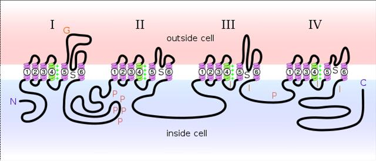
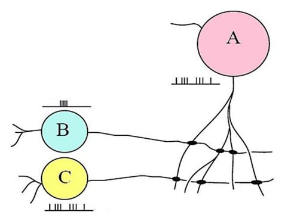
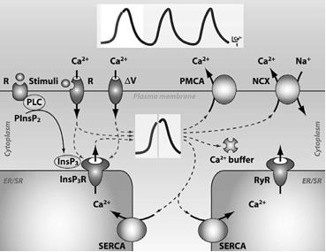
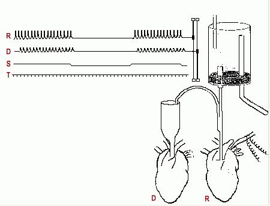
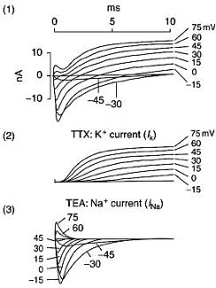
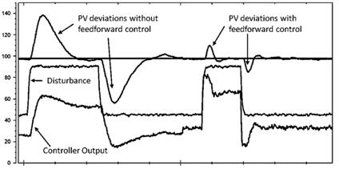

Il tetano è un avvelenamento acuto dovuto all'ingestione di una neurotossina prodotta dal batterio gram+ Clostridium tetani. Le manifestazioni cliniche constano in una contrazione involontaria e vigorosa dei muscoli scheletrici, fino alla morte che sopraggiunge per insufficinenza respiratoria. La tossina tetanica agisce:
La palitossina (PLX o PLTX) è uno dei veleni marini più potenti mai scoperti, isolata per la prima volta dal celenterato marino Palythoa toxica. Indica per ciascuna delle seguenti affermazioni riguardo la palitosina è vera o falsa:
L'equilibrio di Nernst per uno ione i+ la cui concentrazione intracellulare è di 350mmol/L e quella extracellulare è di 35mmol/L è pari a: (R·T/zF =2.6x10^13)
Completa il seguente testo scegliendo le parole corrette:
Indica quali delle seguenti affermazioni riguardo il potenziale d'azione è vera o falsa:
L'antilocapra americana detiene il record di velocità terrestre sulle lunghe distanze, riuscendo a sostenere ben 56 Km/h su tratti di oltre 6Km. Sulla base di questo dato, ti aspetti che i suoi muscoli siano composti principalmente da:
Un fisiologo ricercatore scopre una nuova molecola in grado di indurre un potenziale d'azione in qualsiasi neurone cui entra in contatto e la battezza col nome kellerina in onore del suo vecchio professore di fisiologia. Secondo le tue conoscenze, quale potrebbe essere un possibile meccanismo d'azione della kellerina?
 L'illustrazione qui riportata rappresenta:
Indica quale tra le seguenti affermazioni riguardanti la ATP sintasi è vera oppure falsa:
Completa il seguente testo scegliendo le parole corrette:
Un paziente che normalmente scambia ossigeno a livello alveolare con una densità di flusso J pari a 16 mol / s · m^2 contrae un'infezione da coronavirus e sviluppa una polmonite interstiziale che a causa dell'infiammazione raddoppia il normale spessore della membrana alveolo-capillare. La densità del flusso d ossigeno in questa condizione sarà pari a:
Completare il seguente testo inserendo le parole più opportune:
La conduzione elettrotonica:
Indica quali delle seguenti affermazioni sulla tecnica delle optical tweezers è vera oppure falsa:
Il riflesso di Ferguson:
Le sinapsi elettriche presentano una caratteristica peculiare che le rende diverse dalle sinapsi chimiche. Questa è:
Indica se le seguenti affermazioni sono vere oppure false. Il segno del potenziale post-sinaptico:
I neurotrasmettitori tipici dei neuroni inibitori sono:
La molecola idrosolubile oggetto dello studio su cui si basa il tuo dottorato di ricerca, quando interagisce con le sue cellule bersaglio, induce in vitro una risposta lenta e basata principalmente su modificazioni morfologiche e dell'espressione genica della suddetta cellula. Sulla base di queste osservazioni, ipotizzi che la molecola interagisca con:
Un paziente si reca in pronto soccorso per una sospetta intossicazione da atropina (lo stesso confessa di aver colto e mangiato funghi senza farsi aiutare da un esperto. Quale antidoto useresti?
Una mutazione genetica non consente l'apertura dei canali V-dipendenti del potassio. Quali effetti ti aspetti sui neuroni affetti da questa canalopatia?
Ad un paziente ricoverato per ipofosfatemia grave vengono somministrate grandi dosi di fosfato sodico endovena. Il paziente però, a causa dell'aumento eccessivo di fosfati, sviluppa una grave ipocalcemia (un abbassamento dei livelli ematici di Ca++) iatrogena. Cosa ti aspetti accada a livello dei terinali sinaptici del paziente?
Come viene definita la contrazione concentrica?
Indica se le seguenti frasi in relazione all'illustrazione sono vere o false. Secondo il modello di Hebb:
Completare il seguente testo inserendo le risposte corrette:
La figura sottostante illustra i meccanismi che contribuiscono a regolare la concentrazione di Ca2+ nel citoplasma: alcuni di questi contribuiscono ad aumentarla, quali? (più di una risposta può essere corretta)

Un tetano muscolare rappresenta un fenomeno di sommazione di scosse muscolari che si susseguono ad una ben precisa frequenza, detta "frequenza di fusione". In un muscolo stimolato dai motoneuroni spinali la frequenza di fusione per l'ottenimento di un tetano è pari a:
Indica quali delle seguenti affermazioni circa il meccanismo di contrazione del muscolo cardiaco sono vere o false:
Quali sono i fattori che determinano il passo del "power stroke" all'interno del ciclo della contrazione muscolare del muscolo striato? (più di una risposta può essere corretta)
Completa il seguente testo inserendo le parole corrette:
Indica quali informazioni riguardo il trasportatore pendrina sono vere o false:
ll potenziale di membrana a riposo di un segmento di assone è pari a -100mV. Il potenziale soglia per l'innesco di un potenziale di azione è -60mV. Il segmento di assone è lungo 10 mm. La costante di lunghezza ?=10 mm. L'assone è stimolato elettricamente ad entrambe le estremità, in modo da generare due potenziali depolarizzanti di ampiezza 30 mV, che si propagano l'uno contro l'altro e si incontrano a metà assone. Il potenziale risultante a metà assone è pari a:
La digossina è
Il premio Nobel per la medicina di quest'anno è assegnato ad un noto ricercatore americano che ha scoperto un farmaco capace di facilitare la trasmissione sinaptica sia attraverso meccanismi presinaptici che attraverso meccanismi postsinaptici. N.B.: Facilitare la trasmissione sinaptica significa che la probabilità che un potenziale di azione nel neurone presinaptico generi un potenziale di azione nel neurone postsinaptico aumenta. Quali potrebbero essere i meccanismi sfruttati dal farmaco? (più di una risposta è corretta)
Indica quali affermazioni sono vere o false circa il trasporto di glucosio:
La miastenia grave è una malattia autoimmune nella qual il sistema immunitario genera autoanticorpi contro i recettori colinergici della placca neuromuscolare. La caratteristica clinica principale della malattia è la diminuzione della forza muscolare (paralisi). Quale dei seguenti farmaci somministreresti ad un pz affetto da miastenia per aumentare la forza muscolare?
Indica l'ordine corretto dei passaggi che portano al rilascio di neurotrasmettitore
La reserpina è un farmaco che blocca il trasportatore vescicolare VMAT, che trasporta adrenalina, noradrenalina e serotonina dal citoplasma nelle vescicole sinaptiche. Che effetto ha la reserpina sul rilascio di questi neurotrasmettitori?
L'immagine sottostante rappresenta un famosissimo esperimento condotto da Otto Loewi sul cuore di rana in merito alla disputa "dry versus wet". 
I grafici sottostanti mostrano le correnti di membrana in funzione del tempo, misurate in condizioni di voltage clamp nellassone gigante del calamaro, per potenziali di membrana compresi tra -45 e +75 mV. Tracce in (1): correnti misurate in condizioni normali; tracce (2): correnti misurate in presenza di TTX; tracce (3): correnti misurate in presenza di TEA. Qual è il potenziale di inversione della corrente di Na+? 
Il TEA è un bloccante selettivo dei canali voltaggio dipendenti del potassio (Kv). Che effetto avrebbe il TEA sul potenziale di azione di una fibra nervosa?
Indica quali affermazioni sono corrette rispetto al modello di Hodgkin e Huxley
In cosa consiste il periodo refrattario? (più di una risposta è corretta)
Un segmento di assone è stimolato elettricamente a entrambe le estremità, in modo da generare due potenziali depolarizzanti che viaggiano uno contro l'altro e si incontrano a metà dell'assone, in due differenti condizioni: 1. stimolo sotto soglia 2. stimolo sopra soglia. Cosa accade nel punto in cui i due potenziali collidono? (più di una risposta è corretta)
Il "duty ratio"
Completa il seguente testo scegliendo le frasi corrette:
Indica il corretto ordine dei passaggi che conducono all'LTP
Lo schema sottostante mostra leffetto di un disturbo su un generico sistema regolato, in assenza di un meccanismo a feedforward (parte sinistra della figura) e in presenza di feedforward (parte destra della figura). Applica lo schema ad una situazione in cui un probando deve mantenere il braccio orizzontale mentre gli viene applicato un carico. Qual è la variabile regolata in questo specifico caso?  Didascalia: PV = variabile regolata. Linea continua orizzontale = set point. Controller output = segnale in uscita dal controllore. Le unità di misura sono arbitrarie